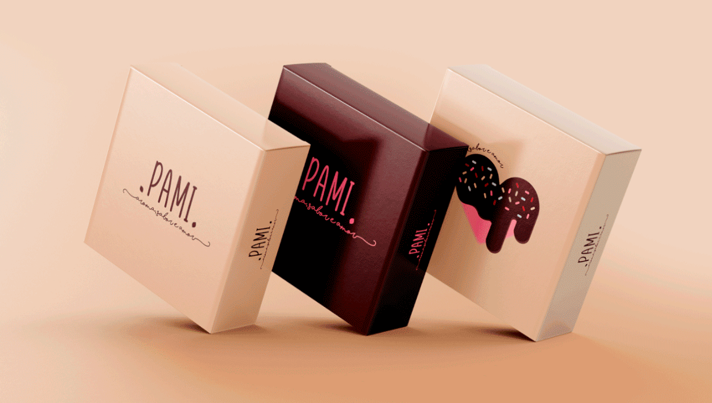

22 de janeiro de 2022
A primeira paixão a gente nunca esquece...

Depois disso eu sai em disparada fazendo várias identidades visuais,
catálogos, social media, tudo que eu podia criar eu criei! Aprendi muitas técnicas, buscava constantemente por inspirações, me apaixonei pela criação como um todo e no que ela podia me proporcionar...